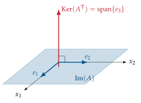
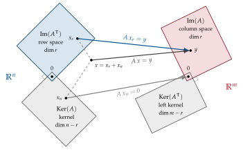

Chapter 2Fundamentals of linear algebra
The goal of the course is to learn how to estimate linear models from data. All the methods of the course are built on a small number of tools of numerical linear algebra, reviewed in this chapter and in Chapter 3.
2.1 Matrices as linear maps
A matrix \(A\in\R^{m\times n}\) has \(m\) rows and \(n\) columns; it is called tall if \(m>n\), fat (or wide) if \(m<n\), square if \(m=n\). Whenever we think about a matrix we are implicitly defining a linear map from a space to another:
Partitioning \(A\) by columns, \(A=[a_1\;a_2\;\cdots\;a_n]\) with \(a_i\in\R^m\), the product \(Ax\) is a linear combination of the columns of \(A\), with coefficients given by the entries of \(x\):
This simple observation is the key to most of what follows.
2.2 Image and kernel
Definition 2.1 (Vector subspace). Let \((V,\mathbb{K})\) be a vector space over a field \(\mathbb{K}\). A subset \(W\subseteq V\) is a (vector) subspace of \(V\) if it is itself a vector space over \(\mathbb{K}\) with the operations of \(V\), i.e. if it is non-empty and closed under linear combinations:
In these notes the field is always that of real numbers, \(\mathbb{K}=\R\), and \(V=\R^n\) (complex numbers appear only as eigenvalues and eigenvectors, Section 2.5). Taking \(\alpha=\beta=0\) shows that every subspace contains the zero vector: \(\{0\}\), \(\R^n\), and the lines and planes through the origin of \(\R^3\) are subspaces, while a line not passing through the origin is not. The set of all linear combinations of given vectors \(v_1,\dots,v_k\), their span \(\spn\{v_1,\dots,v_k\}\), is always a subspace, whose dimension is the maximum number of linearly independent vectors among \(v_1,\dots,v_k\).
Two relevant subspaces are associated with a matrix \(A \in \mathbb{R}^{m \times n}\) (i.e. with its linear map).
Definition 2.2 (Image, rank). The image (or range, or column space) of \(A\in\R^{m\times n}\) is
By (2.1), \(\Im(A)=\col(A)=\spn\{a_1,\dots,a_n\}\). Its dimension is the rank of \(A\): \(\rank(A)=\dim\Im(A)\), i.e. the maximum number of linearly independent columns (which equals the maximum number of linearly independent rows).
Definition 2.3 (Kernel). The kernel (or null space) of \(A\) is
Let
The third column is the sum of the first two, while \(a_1,a_2\) are independent, hence
and \(\dim\Im(A)=2=\rank(A)\). For the kernel we solve \(Ax=0\):
(the third equation is the sum of the first two). All solutions are \(x=(-x_3,-x_3,x_3)\T\), and choosing \(x_3=1\),
Indeed, by (2.1), \(A\,(-\alpha,-\alpha,\alpha)\T=-\alpha a_1-\alpha a_2+\alpha a_3=0\) for every \(\alpha\in\R\): a vector of the kernel collects the coefficients of a vanishing linear combination of the columns.
Theorem 2.4 (Rank–nullity, “fundamental theorem”). For every \(A\in\R^{m\times n}\),
Proof.
Let \(\{k_1,\dots,k_d\}\) be a basis of \(\Ker(A)\) and complete it to a basis \(\{k_1,\dots,k_d,w_1,\dots,w_{n-d}\}\) of \(\R^n\). Every \(y\in\Im(A)\) is \(y=A(\sum\alpha_ik_i+\sum\beta_jw_j)=\sum\beta_jAw_j\), so the vectors \(Aw_j\) span \(\Im(A)\). They are independent: if \(\sum\beta_jAw_j=0\) then \(\sum\beta_jw_j\in\Ker(A)\), which forces all \(\beta_j=0\) by construction. Hence \(\dim\Im(A)=n-d\).
∎In Example 2.1: \(\dim\Ker(A)=3-2=1\).
2.3 The four fundamental subspaces
Two other significant subspaces are associated with \(A\in\R^{m\times n}\), namely the image and the kernel of \(A\T\):
Let \(A=\bmat{1&0\\0&1\\0&0}\in\R^{3\times2}\) (\(m=3\), \(n=2\)). Then
and \(\dim\Ker(A)=n-\rank(A)=2-2=0\). For the left kernel, \(A\T x=0\) reads
so every \(v=(0,0,\alpha)\T\), \(\alpha\in\R\), belongs to the left kernel: \(\Ker(A\T)=\spn\{e_3\}\subseteq\R^3\), \(\dim\Ker(A\T)=1\). As shown in Figure 2.1, \(\Im(A)\) and \(\Ker(A\T)\) are orthogonal and together they generate \(\R^3\).

Theorem 2.5 (Orthogonality of the fundamental subspaces). For every \(A\in\R^{m\times n}\) with \(r=\rank(A)\):
Proof.
If \(y=Ax\in\Im(A)\) and \(z\in\Ker(A\T)\), then \(z\T y=z\T Ax=(A\T z)\T x=0\). Conversely, a vector \(z\) orthogonal to all columns of \(A\) satisfies \(A\T z=0\); hence \(\Ker(A\T)\) is exactly the orthogonal complement of \(\Im(A)\) in \(\R^m\), and the dimensions add up to \(m\). The second line follows by applying the first one to \(A\T\) (recall \(\rank A\T=\rank A\)).
∎These four subspaces are the four fundamental subspaces of a matrix, and Theorem 2.5 is often called the fundamental theorem of linear algebra (G. Strang [3]); it is summarised in Figure 2.2. The map \(A\) sends the row space \(\Im(A\T)\) one-to-one onto the column space \(\Im(A)\) and annihilates the kernel. We shall see in Chapter 3 that the SVD provides orthonormal bases of all four subspaces at once.

2.4 Inner product, norms and orthogonal matrices
The Euclidean inner product of \(x,y\in\R^n\) is \(\ip{x}{y}=x\T y\) and the induced norm is \(\norm{x}_2=\sqrt{x\T x}\); \(x\) and \(y\) are orthogonal (\(x\perp y\)) when \(x\T y=0\). A set of vectors \(\{v_1,\dots,v_k\}\) is orthonormal if \(v_i\T v_j=\delta_{ij}\) (Kronecker delta, giving \(1\) if \(i=j\) and 0 otherwise). A square matrix \(Q\in\R^{n\times n}\) is orthogonal if \(Q\T Q=QQ\T=I_n\), i.e. \(Q^{-1}=Q\T\): its columns form an orthonormal basis of \(\R^n\). Orthogonal matrices preserve lengths and angles: \(\norm{Qx}_2=\norm{x}_2\). A rectangular \(Q\in\R^{m\times k}\) with orthonormal columns (\(Q\T Q=I_k\), \(k\le m\)) is not orthogonal unless \(k=m\), since \(QQ\T\neq I_m\) is then the orthogonal projector onto \(\Im(Q)\) (Section 4.4).
Two matrix norms will be used repeatedly (see also Section 3.5):
where \(\lambda_{\max}\) is the largest eigenvalue among the real-valued eigenvalues of the symmetric matrix \(A\T A\).
2.5 Eigenvalues and eigenvectors
Let \(A\in\R^{n\times n}\). A scalar \(\lambda_i\in\C\) is an eigenvalue of \(A\) if it is a root of the characteristic polynomial \(p(\lambda)=\det(\lambda I-A)\), and a vector \(r_i\neq0\) is an associated (right) eigenvector if
Definition 2.6 (Algebraic and geometric multiplicity). The algebraic multiplicity \(m_{\mathrm{alg}}(\lambda_i)\) is the number of times \(\lambda_i\) is a root of \(p(\lambda)\). The geometric multiplicity is the number of independent eigenvectors associated with \(\lambda_i\):
For instance, if \(p(\lambda)=(\lambda-2)(\lambda-1)^2\) then \(m_{\mathrm{alg}}(2)=1\) and \(m_{\mathrm{alg}}(1)=2\).
A matrix \(A\in\R^{n\times n}\) is diagonalizable if there exists a nonsingular \(R\in\C^{n\times n}\) such that \(R^{-1}AR\) is diagonal. The following result characterizes diagonalizability in terms of the multiplicities of the eigenvalues.
Proposition 2.7 (Necessary and sufficient condition for diagonalizability). Let \(\mu_1,\dots,\mu_q\) (\(q\le n\)) be the distinct eigenvalues of \(A\in\R^{n\times n}\). Then \(A\) is diagonalizable if and only if
In particular, if the \(n\) eigenvalues of \(A\) are distinct (\(q=n\)), then \(A\) is diagonalizable. This condition is sufficient but not necessary.
Proof.
\(R^{-1}AR=\Lambda\) diagonal is equivalent to \(AR=R\Lambda\), i.e. \(Ar_i=\lambda_ir_i\) for every column \(r_i\) of \(R\): hence \(A\) is diagonalizable if and only if it has \(n\) linearly independent eigenvectors. Eigenvectors associated with distinct eigenvalues are linearly independent, so the union of bases of the eigenspaces \(\Ker(\mu_jI-A)\) is an independent set of \(\sum_j m_{\mathrm{geo}}(\mu_j)\) eigenvectors, and no independent set of eigenvectors can be larger. Therefore \(A\) is diagonalizable if and only if \(\sum_j m_{\mathrm{geo}}(\mu_j)=n\). Since \(m_{\mathrm{geo}}(\mu_j)\le m_{\mathrm{alg}}(\mu_j)\) and \(\sum_j m_{\mathrm{alg}}(\mu_j)=n\) (the degree of \(p(\lambda)\)), this happens if and only if every inequality holds with equality. Finally, if \(q=n\), then \(1\le m_{\mathrm{geo}}(\mu_j)\le m_{\mathrm{alg}}(\mu_j)=1\) for every \(j\).
∎Theorem 2.8 (Eigenvalue–eigenvector (modal) decomposition). If \(A\) is diagonalizable, the algebraic multiplicity of every eigenvalue of \(A\) equals its geometric multiplicity, then there exist \(n\) independent eigenvectors and
The rows \(l_i\T\) of \(L\) are left eigenvectors, \(l_i\T A=\lambda_il_i\T\), and, since \(LR=I\), they satisfy the bi-orthogonality relation \(l_i\T r_j=\delta_{ij}\).
A diagonalizable matrix is easy to “manipulate”: for every function \(f\) defined by a power series (polynomials, exponential,…),
Two cases are of primary interest in systems theory (Appendix A):
Let \(M=\bmat{2&1&0\\0&1&0\\0&0&1}\), with \(p(\lambda)=(\lambda-2)(\lambda-1)^2\). For \(\lambda=1\), \(M-I=\bmat{1&1&0\\0&0&0\\0&0&0}\) has rank one, hence \(m_{\mathrm{geo}}(1)=3-1=2=m_{\mathrm{alg}}(1)\) and \(M\) is diagonalizable. Eigenvectors: \(r_1=(1,0,0)\T\) for \(\lambda_1=2\); \(r_2=(1,-1,0)\T\), \(r_3=(0,0,1)\T\) for \(\lambda_{2,3}=1\). Then
and one checks \(l_1\T M=(1,1,0)M=(2,2,0)=2\,l_1\T\) and \(M^k=2^k r_1l_1\T+r_2l_2\T+r_3l_3\T\).
By contrast, the matrix \(J=\bmat{1&1\\0&1}\) has \(m_{\mathrm{alg}}(1)=2\) but
\(m_{\mathrm{geo}}(1)=2-\rank(I-J)=1\): it is not diagonalizable and (2.2) does not
apply (see the advanced topic at the end of the chapter).
Remark 2.9 (Standing assumption: distinct eigenvalues). By Proposition 2.7, a matrix with distinct eigenvalues is always diagonalizable, and this is the generic situation: an arbitrarily small perturbation of the entries of a matrix with repeated eigenvalues makes them distinct. For simplicity, from now on, whenever the eigenvalue–eigenvector decomposition is used (e.g. for the natural modes and the impulse response of a system), we assume that the eigenvalues are distinct. The case of multiple eigenvalues, and that of non-diagonalizable matrices, can be addressed through the Jordan form (see the Further Study box at the end of this chapter): this only brings minor technical complications (for instance, the natural modes \(\lambda_i^k\) are complemented by the modes \(k^j\lambda_i^k\)), with no significant change in the theory of system identification.
Symmetric matrices. The case of symmetric matrices is particularly nice and is the basis of the SVD.
Theorem 2.10 (Spectral theorem). If \(M=M\T\in\R^{n\times n}\), all its eigenvalues are real and there is an orthonormal basis of eigenvectors: \(M=R\Lambda R\T\) with \(R\T R=I\) (so \(L=R^{-1}=R\T\)). If moreover \(M\) is positive semidefinite (\(x\T Mx\ge0\) for all \(x\), written \(M\succeq0\)), all \(\lambda_i\ge0\); \(M\) is positive definite (\(M\succ0\)) iff all \(\lambda_i>0\).
For every \(A\in\R^{m\times n}\) the matrices \(A\T A\in\R^{n\times n}\) and \(AA\T\in\R^{m\times m}\) are symmetric and positive semidefinite, because \(x\T A\T Ax=\norm{Ax}_2^2\ge0\); moreover \(\Ker(A\T A)=\Ker(A)\), so that \(\rank(A\T A)=\rank(A)\) and \(A\T A\succ0\) if and only if \(A\) has independent columns.
2.6 The QR decomposition
Besides the SVD, the most important factorization in numerical least squares is the QR decomposition, which orthonormalizes the columns of a matrix.
Theorem 2.11 (QR decomposition). Every \(A\in\R^{m\times n}\) with \(m\ge n\) can be written as
with \(Q\in\R^{m\times m}\) orthogonal, \(Q_1\in\R^{m\times n}\) with orthonormal columns and \(R_1\in\R^{n\times n}\) upper triangular (economy-size or thin QR). If \(A\) has independent columns, \(R_1\) is nonsingular and \(\Im(Q_1)=\Im(A)\), \(\Im(Q_2)=\Ker(A\T)\).
Conceptually, \(Q_1\) is obtained by the Gram–Schmidt procedure applied to \(a_1,a_2,\dots\):
Numerically, QR is computed with Householder reflections, which are backward stable [4]. Applied to \(A\T\) it gives the LQ (or RQ) factorization \(A=LQ\T\) with \(L\) lower triangular, used for an efficient implementation of subspace methods in Section 8.7.
For \(X=\bmat{1&1\\1&2\\1&3\\1&4}\) the Gram–Schmidt procedure gives \(q_1=\tfrac12(1,1,1,1)\T\), \(r_{11}=2\), \(r_{12}=q_1\T x_2=5\), \(\tilde q_2=x_2-5q_1=(-\tfrac32,-\tfrac12,\tfrac12,\tfrac32)\T\), \(r_{22}=\sqrt5\), so \(X=Q_1R_1\) with \(R_1=\bmat{2&5\\0&\sqrt5}\) (MATLAB may return \(-Q_1,-R_1\): the factorization is unique only up to the signs of the columns of \(Q_1\)).
2.7 Some rank results used later
Lemma 2.12 (Sylvester’s inequality). If \(M\in\R^{r\times n}\) and \(N\in\R^{n\times h}\), then
Corollary 2.13. If \(\rank(M)=\rank(N)=n\) (i.e. \(M\) has independent columns and \(N\) independent rows), then \(\rank(MN)=n\) and \(\Im(MN)=\Im(M)\).
Proof.
The rank follows from Lemma 2.12 (\(n+n-n\le\rank(MN)\le n\)). Moreover \(\Im(MN)\subseteq\Im(M)\) always holds, and two nested subspaces with the same dimension coincide.
∎Corollary 2.13 is the cornerstone of the realization and subspace methods of Chapters 7 and 8: a data matrix that factorizes as “(something of full column rank \(n\))\(\times\)(something of full row rank \(n\))” reveals \(n\) through its rank and the column space of the first factor through its image.
2.8 Exercises
Exercise 2.1. Find bases of the four fundamental subspaces of \(A=\bmat{1&2&0&1\\2&4&1&4\\3&6&1&5}\) and verify Theorems 2.4 and 2.5.
Exercise 2.2. Show that \(\Ker(A\T A)=\Ker(A)\) and deduce that \(A\T A\) is invertible if and only if \(A\) has independent columns. Similarly, \(AA\T\) is invertible iff \(A\) has independent rows.
Exercise 2.3. Compute the eigenvalues, the algebraic and geometric multiplicities and, when possible, the modal decomposition of \(\bmat{0&1\\-0.5&1.5}\) and of \(\bmat{0.5&1\\0&0.5}\). For the first matrix compute \(A^{10}\) with (2.3).
Exercise 2.4. Prove that the eigenvectors of a symmetric matrix associated with distinct eigenvalues are orthogonal. (Hint: compute \(r_i\T Mr_j\) in two ways.)
Exercise 2.5. Compute by hand the thin QR decomposition of \(\bmat{1&0\\1&1\\0&1}\) and use it to find the orthogonal complement of its image.
2.9 Implementation in MATLAB and Python
The relevant MATLAB functions are rank, orth (orthonormal basis of the
image), null (orthonormal basis of the kernel), eig, qr (use
qr(A,0) or qr(A,"econ") for the thin factorization). Note that
rank, orth and null are computed through the SVD with a
tolerance (Section 3.4). The following script reproduces the examples of this
chapter.
%% Chapter 2 - Fundamental subspaces, rank, eigendecomposition, QR
A = [1 0 1; 0 1 1; 1 1 2]; % example of Section 1.2 (a3 = a1 + a2)
r = rank(A) % dim Im(A) = 2
ImA = orth(A) % orthonormal basis of Im(A)
KerA = null(A) % orthonormal basis of Ker(A) ~ (-1,-1,1)/sqrt(3)
KerAT = null(A') % left kernel
check = ImA' * KerAT % = 0 : Im(A) is orthogonal to Ker(A^T)
A2 = [1 0; 0 1; 0 0]; % tall 3x2 example
null(A2) % empty: Ker(A2) = {0}
null(A2') % e3: left kernel
%% Eigendecomposition A = R*Lambda*L, L = inv(R)
M = [2 1 0; 0 1 0; 0 0 1]; % p(lambda) = (lambda-2)(lambda-1)^2
[R, Lam] = eig(M);
Lft = inv(R); % rows = left eigenvectors
disp(norm(R*Lam*Lft - M)) % ~ 0 (M is diagonalizable)
mgeo1 = 3 - rank(1*eye(3) - M) % geometric multiplicity of lambda = 1 -> 2
k = 5; disp(norm(M^k - R*Lam^k*Lft)) % A^k via the modal decomposition
J = [1 1; 0 1]; % Jordan block: m_alg = 2 > m_geo = 1
[RJ, LJ] = eig(J) % R is (numerically) singular
%% QR decomposition
X = [1 1; 1 2; 1 3; 1 4];
[Q, Rq] = qr(X, 0); % economy size: Q 4x2, Rq 2x2 upper triangular
disp(norm(Q'*Q - eye(2))); disp(norm(Q*Rq - X))
In Python (numpy/scipy) the same operations are:
import numpy as np
from scipy.linalg import orth, null_space, qr
A = np.array([[1., 0, 1], [0, 1, 1], [1, 1, 2]])
print(np.linalg.matrix_rank(A)) # 2
print(orth(A)) # basis of Im(A)
print(null_space(A)) # ~ (-1,-1,1)/sqrt(3)
print(null_space(A.T)) # left kernel
lam, R = np.linalg.eig(np.array([[2., 1, 0], [0, 1, 0], [0, 0, 1]]))
L = np.linalg.inv(R) # rows = left eigenvectors
Q, Rq = np.linalg.qr(np.array([[1., 1], [1, 2], [1, 3], [1, 4]])) # thin QR
Further Study: Jordan form and the Cayley–Hamilton theorem
Jordan form. When \(A\) is not diagonalizable, there is a nonsingular \(T\) such that \(A=TJT^{-1}\), \(J=\diag(J_1,\dots,J_s)\), with Jordan blocks \(J_i=\lambda_iI+N_i\) (\(N_i\) nilpotent with ones on the superdiagonal). The number of blocks associated with \(\lambda_i\) equals \(m_{\mathrm{geo}}(\lambda_i)\) and their total size equals \(m_{\mathrm{alg}}(\lambda_i)\). Powers are computed with the binomial formula: for a block of size \(\nu\),
which shows that non-diagonalizable eigenvalues generate the natural modes \(k^j\lambda_i^k\) (Appendix A). The Jordan form is numerically unstable (an arbitrarily small perturbation makes a matrix diagonalizable); in numerical work one uses the Schur form \(A=QTQ\T\) (\(Q\) orthogonal, \(T\) quasi-triangular) instead.
Cayley–Hamilton. Every square matrix satisfies its own characteristic polynomial, \(p(A)=0\). Consequently \(A^n\), and hence every \(A^k\) with \(k\ge n\), is a linear combination of \(I,A,\dots,A^{n-1}\). This is why the reachability and observability matrices of Appendix A stop at the power \(n-1\), and why the rank of the extended matrices \(\Obs_s\), \(\Rch_\ell\) of Chapter 7 does not grow for \(s,\ell>n\).